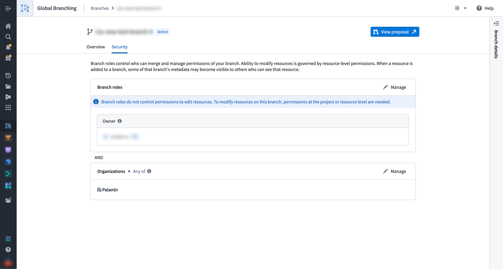

Access to a branch in Global Branching is primarily governed by two mechanisms: roles and organizations.
Roles control what actions a user can perform on a branch.
Each branch must have at least one Owner. The user who creates a branch is automatically assigned the Owner role, but the role may also be assigned. Owners have full control over the branch and can:
Branch owners also receive branch notifications, such as inactivity and data-deletion notices.
Administrators of the space that a branch belongs to have the same permissions as the Owner role. However, administrators do not automatically receive branch notifications.
:::callout{theme="note"} Branch roles control access to branch management actions only and do not grant permissions to edit resources on the branch. To modify resources, a user must have the appropriate permissions at the project or resource level. To see resources on a branch or a proposal, you must be able to view that resource. :::
Roles can be managed by navigating to the Security tab on the branch page in the Global Branching application. Only owners and space administrators can modify role assignments.

Any user who can view a proposal can merge it, as long as resource-level approvals and checks are satisfied and the Do not merge setting is not applied.
Owners retain meaningful control over the merge of the branch through use of approvals and the Do not merge setting.
:::callout{theme="note"} The person who merges may be submitting changes to resources that they cannot edit themselves. This is by design: edit permissions are still required to modify the branched resource in the first place; reviewers can be designated to verify and approve the change; and merging only applies pre-authored and approved changes. :::
Ontology resources that have not yet been migrated to projects do not currently enforce the constraint that only editors can modify a resource on a branch. In this case, an approval from an editor is required.
A protected resource requires designated reviewers to approve all changes before they can be merged. Resource-level protection is set by resource owners, and approval policies are defined by project owners. For Code Repositories and Pipeline Builder pipelines, the approval policy is defined within the resource. Learn more about resource protection and approval policies.
Branch owners can apply the Do not merge setting to proposals on the branch. This setting prevents the proposal from being merged until it is removed. It can only be removed by a branch owner.
In addition to role requirements, a user must be a member of at least one of the organizations listed on a branch in order to access it. Organizations act as an access gate to the branch itself. The organizations for a branch must be a subset of those associated with the space that the branch belongs to.
:::callout{theme="note"} Branch metadata such as the branch name may be visible on resources added to the branch, even when those resources are not protected by the same organization markings. :::
When creating a branch, choose a name that does not include sensitive information, as branch names may be visible outside the branch's organization restrictions.
The ontology selected at creation determines where you can make modifications on the branch. You cannot make changes outside the selected ontology, and the ontology cannot be changed after the branch has been created.
In most cases, no additional configuration is required â the branch will automatically be assigned to the space associated with the selected ontology. However, if you select the default ontology, you will need to manually select a space.
The space affects the branch in several ways:
Organizations determine which users can access the branch. You can select from the organizations associated with the chosen space. The default selection is determined as follows:
You can adjust the selection before completing branch creation.